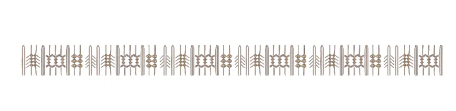

Hamzury Holding
Businesses need connected support to move from an idea to dependable operation. Hamzury Holding brings together specialist ventures across compliance, branding, software, automation, skills and partnerships.
Explore this work ↗I’m hm hamzury. I study why problems persist and how people and institutions can respond with clearer thinking, practical structure and systems that last. My work spans entrepreneurship, education, technology and public life.
HARUNA MUHAMMAD · FOUNDER & INSTITUTION BUILDER · @HMHAMZURY

Founder, Hamzury Holding · Chairman, RIDLI
Philosopher &
developer of ASSSS
Director of Research and Policy, Nigeria
Youths in Politics
Business architecture & systems
consultant
ASSSS is my approach to investigating challenges, choosing deliberate action, and measuring results. It is a developing body of work: open to evaluation, improvement and application across different fields.
Observe, question and define the real problem.
Compare options and choose a direction.
Organise roles, responsibilities and resources.
Build processes that support repeatable work.
Evaluate outcomes, learn and improve.
Four starting points in a growing body of work. Explore the institutions, technology and community initiatives behind the ideas.
Businesses need connected support to move from an idea to dependable operation. Hamzury Holding brings together specialist ventures across compliance, branding, software, automation, skills and partnerships.
Explore this work ↗Access to learning should not depend only on what a young person can afford. RIDLI connects sponsorship, digital literacy and practical training with opportunities to build.
Explore this work ↗Civic participation needs accessible ways to organise information and report what people observe. YEGO is election-focused platform work around participation and reporting.
Explore this work ↗Family knowledge can become fragmented across generations. This project explores organising relationships and preserving lineage in a more accessible form.
Explore this work ↗The research library will contain essays, working papers, books, methods, case studies and free teaching resources. Each item will show its publication status, date, authorship and references.
A foundational ASSSS paper, educator’s toolkit and book series are planned. These are not represented as already published.
Discuss research collaboration ↗In development · forthcoming
Planned teaching resources
Evidence and editorial review required
Branded PDF · Working edition, November 2026
Branded PDF · Working edition, November 2026
Branded PDF · Working edition, November 2026
My work connects entrepreneurship, education, technology and public life. Explore the responsibilities, conversations and moments behind that journey.
Founder, Hamzury Holding · Chairman, RIDLI · Director of Research and Policy, Nigeria Youths in Politics (2026/27; appointment documentation pending review).
Areas of engagement include digital literacy, privacy, internet governance, local networks and professional inclusion.
Engagement index: NITDA · WAIGF · School of Internet Governance · NADPA-RAPDP · ICEGov · IOM · DL4ALL · DW.
Explore my profile & public life ↗The rooms, people and ideas that shape a journey. A collection of work, learning and life beyond the desk.
A growing personal archive · Explore the photographs; detailed event stories are being added.
44 photographs · 6 collections · Select a collection to explore

A 40-page practical book on Awareness, Strategy, Structure, Systems and Success. Explore 12 complete chapters, an illustrative worked example, six reusable worksheets and a glossary.
By Haruna Muhammad · November 2026 · In review
Download the full book ↓Behind the institutions is a life shaped by setbacks, mentors, family, faith, friendships, sport and a desire to keep experiencing the world. I want to recognise the people who helped me and keep making room for new experiences.
If you once gave me encouragement, time or a chance, I hope we stay connected. Send a note or arrange a conversation.
Reconnect with me ↗
Abuja: Suite 4, Ajami Plaza, Plot 500B, Tafawa Balewa Way, Area 3,
Garki.
Jos: Hamzury Innovation Hub.
Entrepreneurship, digital capability, systems thinking and the practice of solving problems.
Invite me ↗Collaborations on education, business systems, digital inclusion and technology governance.
Explore research ↗Partnership ideas through Hamzury Holding, RIDLI and relevant programmes.
Propose partnership ↗
This local demonstration does not store or transmit discovery answers. For a real submission system, consent, privacy notices, secure storage and email delivery must be connected.
The real production admin will require verified owner authentication, access controls, backups and audit logs. This demo has no login, no server, and no sensitive-data security.